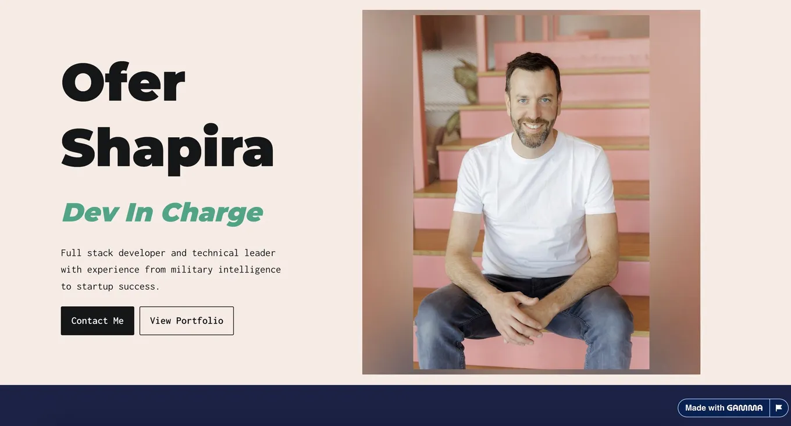

Build a personal website from your LinkedIn profile
Originally posted on LinkedIn, May 4, 2025.
You can turn your LinkedIn profile into a personal website in one minute:
- Open your LinkedIn profile. Click “more” or “resources,” then save your profile details as a pdf.
- Go to gamma.app, sign in or create a free account, and select “create new.”
- Choose the file upload option and select the pdf you downloaded.
- Choose to create a webpage, then pick a style you like.
- That’s it. You have a website. You can edit it, add a photo of yourself, and click publish when it’s ready. Gamma will give you a link to a personal website containing your profile details, which you can share with anyone.
It’s a simple site, but it provides a clean, pleasant way for people to read about your career. Here’s mine.
